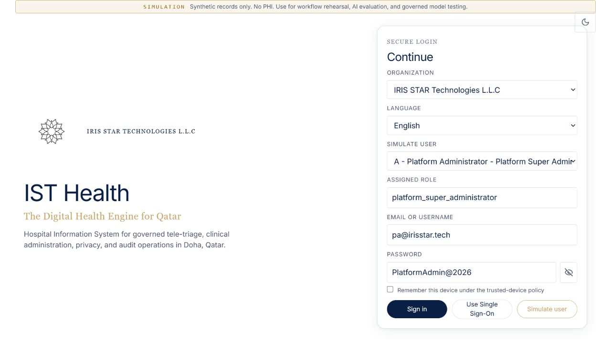

SCREEN 01 / SIMULATION ENTRY
Establish a safe demonstration boundary
Begin by making it explicit that every visible patient and queue record is synthetic and that the role is a named simulation user.

Presenter action
Point to the SIMULATION banner, organization, language, and named-user selector. Do not sign in as Platform Administrator for this journey.
“We are using a governed simulation environment with synthetic records only. The user’s assigned role determines the screens, actions, and data they can access.”
What to validate
- Simulation banner is visible.
- No PHI is used.
- Role is attached to a named user rather than chosen after login.
Presenter note
Do not describe the simulation selector as the production authentication model. Production will use managed identity and SSO policy.